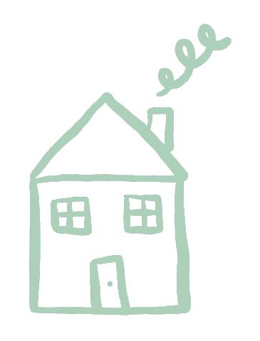

Sobre nosotros
Somos una escuela con más de diez años de antiguedad, estamos ubicados en Costera Miguel Alemán No. 36, Del Panteon, 39300 Guerrero, Acapulco desde el 2010.
Durante los últimos años hemos dado clases a miles de alumnos en la zona de Acapulco y del país sobre meditación, brujería, magia ritual, tarot y runas.